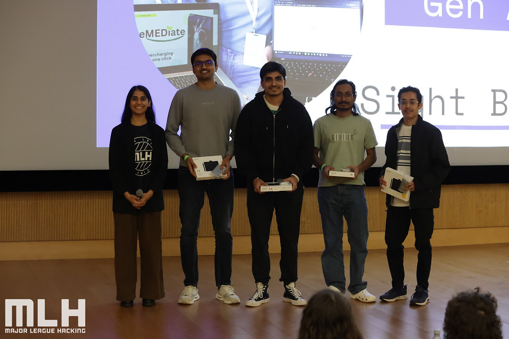
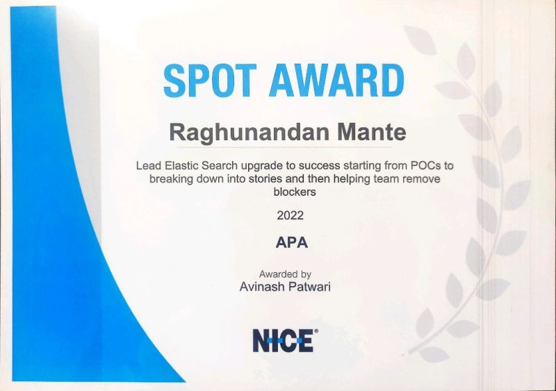

I build and operate distributed systems: designing microservices, automating CI/CD pipelines, and instrumenting production monitoring stacks so teams can ship with confidence. Recently completed M.S. in Computer Science at NC State(Raleigh, USA), focused on machine learning systems.
01 · About
I spent four years at NICE Ltd growing from Research Intern to Software Engineer, working across a Java-based automation platform used by four cross-functional teams. My focus areas: breaking monoliths into Dockerized microservices on Kubernetes, wiring up Prometheus, Grafana, and the ELK stack for observability, and automating Jenkins CI/CD pipelines with static analysis gates (SonarQube, Veracode, Black Duck).
I have now completed my postgraduation - Master's in Computer Science at North Carolina State University with a 4.0 GPA, going deeper on algorithms, machine learning, and data systems — including research on compressing Graph Neural Networks for 720× faster inference.
I care about the critical parts of software: test coverage, release stability, onboarding time, and making systems observable enough that nobody has to guess why something broke.
02 · Experience
03 · Education
04 · Projects
A GenAI-powered assistive application built at Hack_NCSTATE 2025 (hosted by NC State & Major League Hacking), taking first prize in the GenAI category.
Applied quantization, feature compression, pruning, sparsification, and knowledge distillation to a GraphSAGE + SLE + C&S baseline — reaching 22.5M samples/sec throughput (720× faster inference) via MLP distillation, with 0.771 test accuracy and 68% feature-memory reduction using autoencoder-based compression.
05 · Skills
06 · Accomplishments

